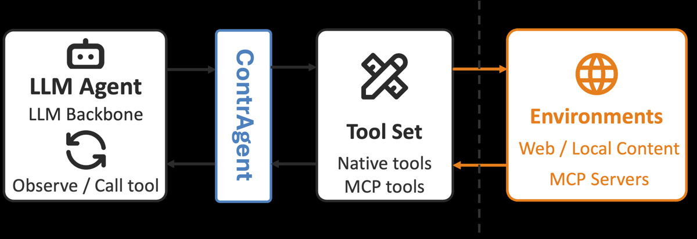
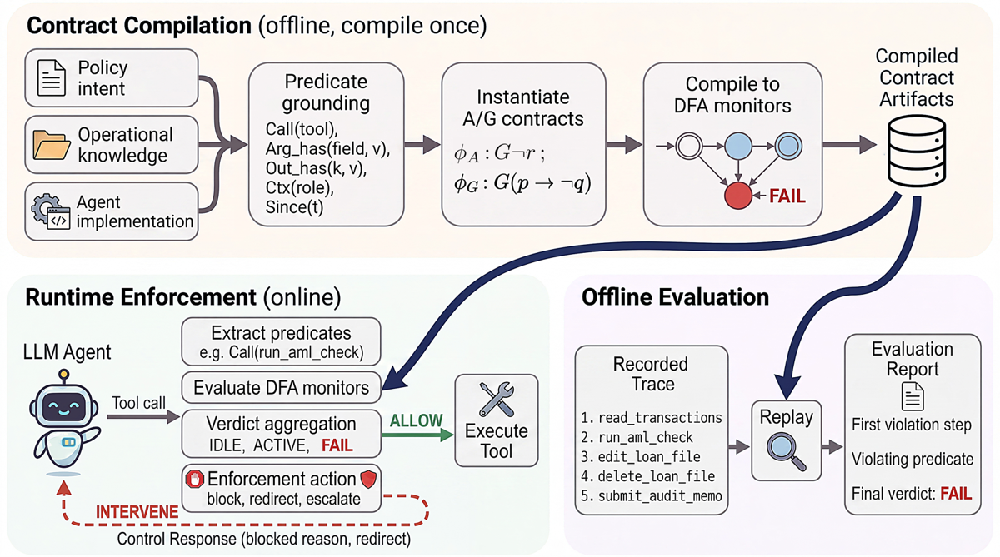

TL;DR — on spécifie les exigences de comportement d'un agent LLM comme des contrats assume-guarantee en ALTL$_f$ (LTL fini + contraintes arithmétiques) sur des prédicats checkables de la trace d'appels d'outils, chaque contrat se compile en DFA, et le même artefact sert à la fois de garde-fou en ligne (bloque le premier appel violant) et d'évaluateur déterministe hors ligne de traces enregistrées [abstract, §4].
Claim principal, formulé précisément : un unique artefact déterministe (le DFA de contrat) remplit les deux rôles que la littérature sépare — grader stochastique post hoc vs blocage par action isolée — en atteignant la parité avec des baselines juge-LLM et guardrail sur 4 benchmarks, avec des verdicts reproductibles et une latence par appel inférieure de plusieurs ordres de grandeur [abstract ; §5.2 Tab. 2 : 0,16 ms vs 50–500 ms]. Le gain chiffré le plus net : sur SOPBench, safety 32 % → 98 % sans perte de success (91 → 90), là où le prompting tombe à 64 % de success et le juge-LLM à 24 % [§5.1, Tab. 1].
⚠️ Papier de vérification, pas de RL. Le signal de contrat n'est jamais utilisé comme reward : uniquement moniteur en ligne (block/redirect/escalate) et évaluateur hors ligne. Le reward-machine est explicitement du future work (« compiling contracts into reward machines for post-training and constrained decoding ») [§6]. C'est le point le plus important pour nous : la brique existe, son usage comme reward est inexploré.
Pas de données d'entraînement — il n'y a pas d'entraînement. Les « données » sont (a) les contrats et (b) les benchmarks tiers.
lang2ltl) ;
3. ground : étape déterministe qui instancie les placeholders en prédicats d'interaction du vocabulaire fixe de [Tab. 1 / App. A] → formule close ;
4. rétro-traduction de chaque formule en langage naturel pour revue humaine (d'après nl2spec) ;
5. compilation LTL$_f$→DFA standard, alphabet $2^V$ ; un DFA pour $\varphi_A$, un pour $\varphi_G$, stockés comme un checker ;
6. contrôles de la bibliothèque : consistency, compatibility, et conflict-freedom = satisfiabilité de $\bigwedge_i (A_i \wedge G_i)$ ; si insatisfiable, extraction d'un cœur insatisfiable minimal (mus2muc) pour localiser les contrats à réparer [§4.1].mus2muc pour les cœurs, Z3 pour le check numérique de consistance [§5].C (« number of contracts evaluated ») de [App. D, Tab. 7] : synthétique 1 · SOPBench 38 à 65 · AgentDojo 8 à 14 · R-Judge 7 · τ²-bench ~53. Donc ordre de grandeur : quelques dizaines de contrats par domaine.ContrAgent n'est pas un environnement : c'est un intercepteur sur l'interface d'appels d'outils entre l'agent et ses outils [Fig. 1].
Structural (test booléen déterministe, aucun modèle dans la boucle) | Prédicat | Sens | |---|---| | $\mathsf{Call}(T)$ | l'outil $T$ est invoqué | | $\mathsf{ArgHas}(T,f,p)$ | l'argument $f$ de $T$ matche le pattern $p$ | | $\mathsf{Path}(T,P)$ | les chemins de fichiers de $T$ sont dans $P$ | | $\mathsf{Subset}(f,S)$ | les valeurs du champ $f$ sont dans l'ensemble $S$ | | $\mathsf{OutHas}(T,p)$ | le résultat de $T$ matche $p$ | | $\mathsf{Said}(p)$, $\mathsf{In}(p)$ | la sortie / l'entrée du modèle matche $p$ | | $\mathsf{Match}(f,k)$ | le champ d'argument $f$ égale la valeur de contexte $k$ | | $\mathsf{Ctx}(k,v)$ | la clé de contexte $k$ vaut $v$ | | $\mathsf{Flow}(s,d)$ | une donnée de la source $s$ atteint le puits $d$ | | $\mathsf{Has}(f)$ | une valeur produite contient le champ $f$ | | $\mathsf{Perm}(P)$ | l'appelant détient la permission $P$ |
Numeric (forme $\theta(s,a) \bowtie c$, $\bowtie \in {\le,<,\ge,>,=}$, crochet d'Iverson) | Prédicat | Quantité $\theta$ | |---|---| | $\mathsf{Cnt}(T)$ | nombre courant d'appels à $T$ | | $\mathsf{Run}(T)$ | longueur du run consécutif courant de $T$ | | $\mathsf{Num}(T,f)$ | valeur numérique du champ $f$ | | $\mathsf{Len}(T,f)$ | longueur en caractères du champ $f$ | | $\mathsf{InLen}$ | longueur en caractères de l'entrée modèle | | $\mathsf{Words}$, $\mathsf{Chars}$ | longueur en mots / caractères de la réponse | | $\mathsf{Tok}$ | tokens cumulés | | $\mathsf{Depth}$ | profondeur de délégation inter-agents | | $\mathsf{Since}(e)$ | temps écoulé depuis l'événement $e$ |
Note des auteurs : $\mathsf{Since}(e)$ lit une horloge murale enregistrée par le framework ; le temps est une extension d'implémentation et n'entre pas dans le modèle formel de [Déf. 1] [App. A].
felli2023monitoring, instance de LTL$_f$ modulo theories). Tous les atomes sont évalués pointwise : la valeur de vérité à chaque événement est calculée depuis l'événement courant $a$ et l'état $s$.rosu2005), d'où un coût par événement $O(|\mathcal{C}|)$ indépendant de la longueur de trace [§4.2]. Les compteurs qui groundent les prédicats numériques sont lus uniquement pendant le grounding et ne sont pas encodés dans le DFA — c'est ce qui garde le DFA fini [§4.1]. ⚠️ Élégant et important : la supervision ne consomme pas de contexte et ne dégrade pas avec l'horizon, contrairement à un juge-LLM.aceto2021bidirectional) : le premier garde l'agent implémentation valide, le second garde son environnement environnement valide.issue_refund was rejected: call check_policy first ».approve antérieur. Sur l'événement $a=(\mathsf{refund},{\mathsf{amount}{:}\,50,\dots})$ : les prédicats structurels tiennent ($\mathsf{Call}(\mathsf{refund})=\top$, $\mathsf{Match}(\mathsf{account},\mathsf{appr})=\top$ car approve a été appelé d'abord et le compte correspond), mais $\mathsf{Num}(\mathsf{refund},\mathsf{amount}) \le 42$ vaut $\bot$ à $\mathsf{amount}=50$ → la garantie, et avec elle le contrat, tombent à FAIL.read_transactions → 2. run_aml_check → 3. edit_loan_file → 4. delete_loan_file → 5. submit_audit_memo, rapport d'évaluation = premier pas en violation + prédicat violant + verdict final FAIL.Le cœur du papier. Et il faut le dire d'emblée : ce n'est pas un reward, c'est un moniteur/évaluateur.
pass^k natif de τ²-bench, « outcome-only (final database state) » [§5.4].wang2023grammar) [§4.1]. ⚠️ Non précisé : quel modèle fait le lift, combien d'exemples, le taux d'erreur du lift avant revue humaine. Pour un papier dont la thèse est « déterministe plutôt que stochastique », laisser le seul composant stochastique non caractérisé est la lacune méthodologique centrale.gemini-2.5-flash-lite, la safety du prompting s'effondre de 94 % à 45 % tandis que celle de ContrAgent reste inchangée à 98 %, « parce que le verdict ne dépend pas du modèle de l'agent » [§5.1, App. C].Aucune. Pas d'algorithme de RL, pas d'hyperparamètre, pas de modèle entraîné, pas de courbe de reward, pas d'entropie, pas de GPU-heures. Le papier est entièrement en inférence/vérification.
Un seul chiffre de compute : les mesures de latence ont été prises sur un laptop Apple M4 Pro (24 Go) [§5]. Pas de GPU.
Le lien avec l'optimisation est prospectif et explicite [§6] : « Future work includes compiling contracts into reward machines for post-training and constrained decoding, and investigating contract-based decomposition mechanisms for multi-agent systems. » ⚠️ Donc : les auteurs ont vu la piste reward-machine, ne l'ont pas faite, et ne donnent aucune indication sur la forme du reward (potentiel-based ? shaping sur l'état du DFA ? pénalité au premier FAIL ?). Le terrain est libre.
Pas de reward hacking au sens RL (pas de reward). Mais le papier mesure du hacking chez les agents supervisés, et c'est son résultat le plus parlant pour nous.
joint^k = outcome correct et zéro violation de contrat sur les $k$ reprises. Chiffre : Claude 3.7 atteint un pass^4 d'outcome de 25 à 60 % selon le domaine mais un joint^4 de 0 % dans les trois domaines — c'est-à-dire aucune tâche n'est complétée de façon fiable sans au moins une violation procédurale, « a form of reward hacking » [§5.4, App. E Tab. 8]. La colonne intermédiaire proc-clean^4 de [Tab. 8] vaut 0,0 % pour Claude 3.7 dans les trois domaines : ce n'est pas un effet de conjonction, c'est que le modèle ne produit jamais 4 reprises procéduralement propres. Correction : aucune — le papier mesure, il n'entraîne pas.
⚠️ Mon évaluation : c'est l'argument le plus fort du papier, et il vaut directement pour un env juridique. Un reward d'outcome seul, sur un agent fort, est satisfait quasi systématiquement par un chemin non conforme. Les auteurs renvoient aussi à AgentPex qui aurait montré que 83 % des traces Claude à reward 1,0 violent encore une règle procédurale — citation externe, non vérifiable dans ce papier.gemini-2.5-flash-lite, celle de ContrAgent reste à 98 % [§5.1, App. C]. Les auteurs : « A prompted SOP's assurance degrades with the model that carries it, whereas a compiled contract's does not. »healthcare (l'agent ne réessaie pas après un blocage) et en university (il fait un changement permis sur une cible que le scoring outcome-based du benchmark ne distingue pas de la cible interdite). ⚠️ Le premier est un vrai failure mode d'interaction : le feedback structuré après blocage n'est pas toujours exploité par l'agent — exactement le genre de comportement qu'un post-training sur ce signal corrigerait.C = nombre de contrats évalués :
| Workload | C | p50 (ms) | p95 (ms) | p99 (ms) |
|---|---|---|---|---|
| Synthétique (1 contrat) | 1 | 0,0052 | — | 0,012 |
| SOPBench (par appel) | 38–65 | 0,097 | 0,171 | 0,272 |
| AgentDojo (par appel) | 8–14 | 0,162 | 0,620 | 0,933 |
| R-Judge (par record) | 7 | 0,040 | 0,085 | 0,141 |
| τ²-bench (par appel) | ~53 | 0,828 | 1,500 | 1,889 |pi_detector), ~100 ms (LlamaFirewall), ~500 ms (tool_filter, prune par LLM). Les défenses prompt-side n'ajoutent pas d'appel mais du texte de prompt.| Chiffre annoncé | Où il est annoncé | Source dans le papier | Verdict |
|---|---|---|---|
| « four benchmarks spanning both roles » | abstract, intro | §5 : SOPBench + AgentDojo (enforcement), R-Judge + τ²-bench (evaluation) | confirmé |
| « matches state-of-the-art LLM-judge and rule-based guardrail baselines » | abstract, intro | R-Judge [§5.3] : F$_1$ 91,8 % > GPT-4o 74,4 %, mais « AgentAuditor outperforms our method » (valeur non donnée). AgentDojo [Tab. 2] : LlamaFirewall 1,75 % ASR mieux que ContrAgent-ND 11,1 % ; seule la variante trace-learned (0,79 %) la dépasse | sur-généralisé — vrai contre un juge GPT-4o et contre les défenses bundled d'AgentDojo ; faux contre AgentAuditor (R-Judge) et contre LlamaFirewall sans contrats minés sur les attaques |
| « orders-of-magnitude lower per-call latency » (mode online) | abstract, intro | [Tab. 2] 0,16 ms vs 50 / 100 / 500 ms ; [Tab. 7] p50 0,04–0,83 ms | confirmé (2 à 3 ordres) pour AgentDojo |
| ⤷ même claim, versant SOPBench | abstract | [Tab. 1] runtime : base 1,96 s/tâche, +0,135 s pour ContrAgent vs +0,905 s (prompt) et +1,34 s (LLM-guard) | sur-généralisé — ici le gain est ~1 ordre, pas « orders of magnitude ». ⚠️ De plus, +0,135 s par tâche vs 0,097 ms p50 par appel [Tab. 7] = ~3 ordres d'écart non réconciliés par le texte ; la différence est plausiblement due aux reprises de l'agent après blocage, mais le papier ne le dit pas |
| SOPBench : safety 32 % → 98 %, au-dessus des 94 % du prompt | §5.1 | [Tab. 1] ligne mean : base 91/32, prompt 64/94, llm-grd 24/98, ContrAgent 90/98 | confirmé |
| « holds success at the base level » | §5.1 | [Tab. 1] 90 vs 91 (−1 pp) | confirmé (à 1 pp près) |
| prompt et llm-guard réduisent le success à 64 % et 24 % « because of over-blocking » | §5.1 | [Tab. 1] mean 64 et 24 ✅ ; l'attribution au sur-blocage est soutenue par [App. C Tab. 4] (success 87→18 et 68→6 quand les contraintes croissent) | confirmé |
| déviation par domaine ≤ 0,4 pp (ContrAgent) vs 2 à 4 pp (conditions pilotées par le modèle), moyenne sur trois essais seedés | §5.1 | aucun tableau d'écarts-types ; chiffres présents dans le texte seul | introuvable (pas de support tabulé ; la valeur elle-même n'est pas contredite) |
| modèle faible : safety prompt 94 % → 45 %, ContrAgent inchangé à 98 % | §5.1 | [App. C] reprend les mêmes valeurs et ajoute que le success d'enforce chute 90 → 68 | confirmé ; ⚠️ la chute de success 90→68 sous modèle faible n'apparaît pas dans le corps, seulement en annexe |
| FPR < 1 % pour 19 des 23 modèles, max 4,5 % (Llama-3.1-8B) | §5.1 | [Tab. 6] : recomptage → 4 modèles > 1 % (4,5 / 2,9 / 2,5 / 1,4), donc 19/23 ✅ ; max 4,5 % = llama3.1-8b ✅ | confirmé |
| recall « dans la bande 54,7–100 % » | App. C | [Tab. 6] min 54,7 (gemini-2.5-flash), max 100,0 (gpt-5, o1) | confirmé |
| famille value/threshold = 74–100 % des catches | App. C | aucune colonne de [Tab. 6] ne ventile par famille | introuvable |
| ContrAgent tient success ≥ 77 % et safety ≥ 89 % sur tous les bacs | §5.1 | [App. C Tab. 4] success 78/77/86/83/100 (min 77) ; safety 100/98/100/93/89 (min 89) | confirmé |
| AgentDojo : ASR poolé 18,0 % → 5,3 % à 0,8 % de FP utilité (no-detector) | §5.2 | [Fig. 3] 22 modèles ; moyenne non pondérée recalculée : base 17,2 %, no-detector 5,43 % | confirmé pour 5,3 % ; le 18,0 % n'est pas exactement reproductible depuis la figure (17,2 % en moyenne non pondérée) — la pondération du « pooled » n'est jamais définie. Les 0,8 % de FP n'ont pas de source tabulée |
| trace-learned : ASR poolé 1,7 % à 0,3 % FP | §5.2 | [Fig. 3] moyenne recalculée : 1,76 % | confirmé |
| gpt-4o : ASR 47,7 % → 11,1 % (ND) / 0,79 % (TL), utilité 71,8 % / 72,6 % | §5.2 | [Tab. 2] valeurs identiques | confirmé |
| échecs AgentDojo : 82 % sans aucun appel malveillant, 18 % à arguments légitimes | §5.2 | texte seul, aucun tableau | introuvable (pas de support tabulé) |
| R-Judge : F$_1$ 91,8 % (97,0 % précision, 87,0 % rappel) sur 571 records | §5.3 | aucun tableau R-Judge. Contrôle arithmétique : $2 \cdot 97{,}0 \cdot 87{,}0 / (97{,}0+87{,}0) = 91{,}7$ ≈ 91,8 ✅ | introuvable comme donnée tabulée, mais internement cohérent. « across multiple trials » : nombre d'essais non précisé |
| R-Judge : > GPT-4o (74,4 %) et > human baseline (≈ 89 %) | §5.3 | valeurs attribuées au benchmark R-Judge, non re-mesurées ici | confirmé comme report, non vérifiable dans ce papier |
| ablation oracle : recall poolé 75,1 % → 75,4 % (+0,3 pp) sur 5 435 traces unsafe | App. C | App. C, texte ; seule source | confirmé (unique source, pas de contradiction) |
| « matrice de 4 464 traces » τ²-bench | §5.4 | [App. E Tab. 8] ne donne que 12 cellules (3 domaines × 4 modèles) sans décompte de tâches | introuvable. ⚠️ Vérification indirecte : les pourcentages de [Tab. 8] impliquent 57 tâches (retail : 34/57 = 59,6 %), 50 (airline), 114 (telecom) → 221 × 4 modèles × 4 reprises = 3 536 traces, pas 4 464. Déduction de ma part, les décomptes de tâches n'étant pas donnés — à traiter comme un signal, pas comme une contradiction établie |
τ² : Claude 3.7 pass^4 25–60 % mais joint^4 0 % dans les 3 domaines |
§5.4 | [Tab. 8] pass$^4$ 59,6 / 36,0 / 25,4 et joint$^4$ 0,0 / 0,0 / 0,0 ; proc-clean^4 = 0,0 partout |
confirmé |
| AgentPex : 83 % des traces Claude à reward 1,0 violent une règle procédurale | §5.4 | citation externe sharma2026willful |
introuvable dans ce papier (report de tiers) |
SOPBench, gemini-2.5-flash, 40 tâches/domaine, success/safety % [Tab. 1] :
| Domaine | base | prompt | LLM-grd | ContrAgent |
|---|---|---|---|---|
| bank | 70/65 | 58/100 | 42/100 | 70/100 |
| DMV | 100/60 | 72/98 | 20/100 | 100/100 |
| healthcare | 90/48 | 52/95 | 20/100 | 83/100 |
| hotel | 100/0 | 30/98 | 15/100 | 100/100 |
| library | 80/25 | 48/95 | 22/98 | 80/100 |
| university | 100/8 | 92/82 | 33/88 | 100/83 |
| online mkt. | 100/20 | 92/90 | 15/98 | 100/100 |
| mean | 91/32 | 64/94 | 24/98 | 90/98 |
| runtime | 1,96 s | +0,905 s | +1,34 s | +0,135 s |
Écart absolu qui compte : +66 pp de safety pour −1 pp de success face au base ; +26 pp de success à safety égale ou supérieure face au prompt ; +66 pp de success à safety égale face au juge-LLM. ⚠️ Seule exception : university, seul domaine où ContrAgent n'atteint pas 100 % de safety (83 %) — il y dépasse le prompt (82 %) mais reste sous le juge-LLM (88 %). Les auteurs l'imputent non à la couche d'enforcement mais à l'agent et au benchmark : « it makes a permitted change to a target the benchmark's outcome-based scoring cannot distinguish from the forbidden one » [§5.1].
AgentDojo, gpt-4o, attaque d'injection principale [Tab. 2] :
| Défense | Type | ASR | Utilité | Overhead |
|---|---|---|---|---|
| No defense | raw agent | 47,7 % | 72,6 % | 0 |
| spotlighting | prompt-side | 41,7 % | 75,0 % | prompt |
| repeat_user_prompt | prompt-side | 27,8 % | 85,5 % | prompt |
| ContrAgent (ND) | data-flow | 11,1 % | 71,8 % | 0,16 ms |
| pi_detector | classifieur | 7,95 % | 41,9 % | ~50 ms |
| tool_filter | prune LLM | 6,84 % | 71,8 % | ~500 ms |
| LlamaFirewall | guardrail | 1,75 % | n/a | ~100 ms |
| ContrAgent (TL) | data-flow | 0,79 % | 72,6 % | 0,16 ms |
⚠️ Trois réserves que le papier énonce lui-même ou qui en découlent : (i) « Only the ContrAgent rows are measured here ; the baseline rates are AgentDojo's published numbers » — donc baselines non re-exécutées, potentiellement datées ; (ii) « ContrAgent replays the recorded runs, so its utility cannot exceed that of the undefended agent » — l'évaluation AgentDojo est un rejeu hors ligne, pas de l'enforcement en ligne, alors que les baselines tournaient en ligne : comparaison non appariée sur l'axe utilité ; (iii) la variante TL tire ses contrats des traces d'attaque évaluées.
τ²-bench, k=4 [Tab. 8] — le résultat le plus important du papier :
| Domaine | Modèle | pass⁴ | proc-clean⁴ | joint⁴ |
|---|---|---|---|---|
| retail | Claude 3.7 | 59,6 | 0,0 | 0,0 |
| GPT-4.1 | 52,6 | 78,1 | 43,9 | |
| GPT-4.1-mini | 38,6 | 17,5 | 9,6 | |
| o4-mini | 45,6 | 77,2 | 34,2 | |
| airline | Claude 3.7 | 36,0 | 0,0 | 0,0 |
| GPT-4.1 | 40,0 | 34,0 | 24,0 | |
| GPT-4.1-mini | 26,0 | 14,0 | 14,0 | |
| o4-mini | 38,0 | 48,0 | 30,0 | |
| telecom | Claude 3.7 | 25,4 | 0,0 | 0,0 |
| GPT-4.1 | 19,3 | 4,4 | 2,6 | |
| GPT-4.1-mini | 17,5 | 0,9 | 0,9 | |
| o4-mini | 26,3 | 7,0 | 7,0 |
Lecture : l'écart pass⁴ → joint⁴ est le prix de la conformité procédurale. Il va de −8,7 pp (GPT-4.1 retail) à −59,6 pp (Claude 3.7 retail, qui tombe à zéro). En telecom, aucun des quatre modèles ne dépasse 7 % de joint⁴ alors que trois dépassent 19 % de pass⁴.
| Ablation | Chiffres | Ce qu'elle isole |
|---|---|---|
| Oracle grounding (App. C) | recall poolé 75,1 → 75,4 % (+0,3 pp) sur 5 435 traces | L'erreur de grounding est négligeable ; le résiduel est de la couverture de contrats. Ablation la plus informative du papier |
| ND vs trace-learned (§5.2) | ASR poolé 5,3 % → 1,7 % ; gpt-4o 11,1 % → 0,79 % | Mesure ce qu'apporte la connaissance des attaques — donc aussi ce que la variante honnête (ND) n'a pas |
| Garde sans état (App. B, Tab. 4) | 4 classes temporelles : sans état 0/4, ContrAgent 4/4 | Isole la contribution temporelle : sur des traces dont chaque appel est localement légitime, seule une mémoire de trajectoire décide. ⚠️ Construction analytique, pas une mesure empirique |
| Backbone faible (§5.1, App. C) | prompt safety 94 → 45 % ; ContrAgent 98 → 98 % (success 90 → 68) | Isole la dépendance de l'assurance au modèle porteur |
| Scaling de contraintes (App. C Tab. 4) | voir ci-dessus | Isole l'effet de la taille de la policy sur chaque stratégie |
gemini-2.5-flash, mêmes 40 tâches/domaine, 3 essais seedés. ⚠️ Sur AgentDojo et R-Judge, non : chiffres publiés repris tels quels, et ContrAgent évalué en rejeu quand les baselines tournaient en ligne.Solide sur sa thèse centrale, fragile sur ses claims de parité. Ce qui est établi et que je reprendrais : (1) un vérifieur symbolique de trajectoire sur prédicats structurels a une FPR < 1 % à travers 23 backbones et un grounding essentiellement exact (+0,3 pp d'oracle) ; (2) il domine strictement prompting et juge-LLM sur le front success/safety, et l'écart croît avec la taille de la policy ; (3) le reward d'outcome seul est procéduralement hacké à ~100 % par Claude 3.7 sur τ²-bench. Ce que je ne reprendrais pas tel quel : la parité avec le SOTA guardrail (fausse sans contrats minés sur les attaques), et tout chiffre AgentDojo d'utilité (rejeu). À répliquer en priorité : le coût humain d'écriture d'une bibliothèque, que le papier ne mesure pas du tout.
Seules deux figures sont extractibles en PNG — les figures de résultats (Fig. 3 AgentDojo 22 modèles, Fig. 4 τ²-bench, Fig. 2 scaling SOPBench) sont des TikZ/pgfplots inlinés dans le source, non exportés ; pour celles-là, voir papers/2609.18128/paper.pdf (section 5) ou les tableaux recopiés en §7, dont les valeurs sont exactement celles tracées [App. C Tab. 4, App. E Tab. 8].

Ce qu'il faut voir : le point d'insertion, et sa modestie. ContrAgent est une lame verticale entre l'agent LLM et le Tool Set, traversée dans les deux sens — appels sortants et retours entrants. Il n'est ni dans le modèle, ni dans les outils, ni dans l'environnement (Web / Local Content / MCP Servers, à droite de la ligne de confiance en pointillés). Conséquences directes : (i) rien n'est ajouté au prompt, donc aucun coût de contexte ; (ii) le moniteur est model-agnostic par position, pas par astuce — d'où le transfert sur 23 backbones ; (iii) tout ce qui ne traverse pas cette lame lui est invisible — c'est la source géométrique des 82 % d'attaques AgentDojo ratées « sans appel d'outil malveillant », et de la limite « free-form semantic harms need a separate content-level check ».

Ce qu'il faut voir : le double usage d'un artefact unique, qui est tout l'argument. En haut, la chaîne de compilation hors ligne, une seule fois : trois sources d'exigences (policy intent, operational knowledge, agent implementation) → predicate grounding sur le vocabulaire fixe (Call(tool), Arg_has(field,v), Out_has(k,v), Ctx(role), Since(t)) → instanciation du couple A/G ($\phi_A : G\neg r$ ; $\phi_G : G(p \rightarrow \neg q)$) → DFA avec son état FAIL absorbant → artefacts compilés en base. De cette base partent deux flèches, et c'est là qu'il faut regarder : à gauche l'enforcement en ligne (extraction des prédicats, évaluation des DFA, agrégation IDLE/ACTIVE/FAIL, puis soit ALLOW → exécution de l'outil, soit action d'enforcement block/redirect/escalate avec boucle INTERVENE de retour vers l'agent portant la raison du blocage) ; à droite l'évaluation hors ligne du même artefact, qui rejoue une trace enregistrée (read_transactions → run_aml_check → edit_loan_file → delete_loan_file → submit_audit_memo) et produit un rapport nommant le premier pas en violation, le prédicat violant et le verdict final.
Deux choses à en tirer pour un env RL : la branche droite est exactement un process-reward hors ligne — attribution datée au pas près, gratuite, déterministe — et la branche gauche, avec sa boucle INTERVENE, est exactement un environnement à feedback structuré sur lequel on pourrait entraîner la récupération après blocage (précisément ce que l'agent healthcare échoue à faire, §5.1). La trace d'exemple choisie par les auteurs est d'ailleurs un cas de conformité réglementaire (AML, édition puis suppression d'un dossier de prêt avant soumission du mémo d'audit) : le domaine visé est déjà, de fait, celui du contrôle procédural réglementé.
| Ingrédient | Choix du papier | Équivalent juridique | Transfert | Ce qui manque |
|---|---|---|---|---|
| Source des tâches | 4 benchmarks tiers, aucune tâche construite [§5] | Harvey LAB / Vals Legal Research Bench en éval ; tâches de recherche juridique outillées pour l'entraînement | non (rien à transférer) | tout : le papier n'apporte aucune tâche |
| Source des contrats | SOP publiques, docs de policy, taxonomies de risque, traces [§4.1, §5.1–5.4] | SOP de cabinet, guides de rédaction interne, règles déontologiques (conflits, secret professionnel), checklists de citation-check, règles de procédure civile | direct — un cabinet produit exactement ce type d'artefact, et c'est la matière première du lift | la relecture experte : coût non précisé dans le papier pour 38–65 contrats |
| Vérifieur | DFA ALTL$_f$ sur prédicats de trace, 0 appel LLM, FPR < 1 % sur 23 backbones [Tab. 6] | vérifieur procédural : ordre des vérifications, fraîcheur des sources, appariement citation↔récupération, murailles de Chine, budget de recherche | direct sur la procédure, non sur le fond | tout le fond : pertinence du holding, qualité de l'argumentation, adéquation de l'autorité à la proposition |
| Harness / outils | interception de l'interface d'appels d'outils, hooks, MCP [Fig. 1, §5] | un agent juridique est déjà outillé (recherche de jurisprudence, vérif. de statut, citator, récupération de doc) → l'interface existe | direct | l'instrumentation fiable de chaque outil (le papier reconnaît faire confiance au framework pour journaliser fidèlement) |
| Algo | aucun [§4] | GRPO/RLOO sur reward hybride | non — à construire | toute la forme du reward : densité, shaping, agrégation des contrats, interaction avec le reward de fond |
| Curriculum | aucun ; seul un binning a posteriori par nombre de contraintes [§5.1] | curriculum par nombre de contraintes procédurales actives | adaptable — le binning 1–2 / 3–4 / 5–6 / 7–9 / 10+ est un curriculum tout prêt | aucune validation qu'il fonctionne comme curriculum (il n'est utilisé qu'en analyse) |
| Anti-hacking | métrique joint^k = outcome et zéro violation sur k reprises [§5.4] |
joint^k juridique : bonne réponse et procédure propre sur k reprises |
direct — c'est la métrique à importer telle quelle | la robustesse du canal d'observation sous apprentissage : non traitée, et c'est le trou critique |
| Validation du vérifieur | FPR par backbone, ablation oracle de grounding, comparaison au garde sans état [Tab. 6, App. B, App. C] | même protocole sur des traces juridiques annotées par des juristes | direct — protocole réutilisable | un jeu de traces juridiques avec violations procédurales étiquetées : n'existe pas |
Vocabulaire utilisé : prédicats de [Tab. 1 / App. A] uniquement, pour rester dans ce que le papier sait grounder déterministement. $\kappa$ = map de clés de contexte, $\rho$ = compteurs [Déf. 1].
C1 — « vérifier le statut en vigueur AVANT de citer » (classe ordre + appariement de contexte)
Outils : check_status(citation_id) → {in_force | repealed | amended, version_date}, cite(citation_id, proposition).
La clé de contexte $k_{\mathrm{checked}}$ est posée par le retour de check_status ; $S_{\mathrm{in_force}}$ est l'ensemble des identifiants dont le retour portait in_force.
$$\varphi_A = G\big(\mathsf{Call}(\mathsf{check_status}) \rightarrow F\,\mathsf{OutHas}(\mathsf{check_status},\ \texttt{in_force|repealed|amended})\big)$$
$$\varphi_G = \underbrace{\big(\neg\,\mathsf{Call}(\mathsf{cite})\ U\ \mathsf{Call}(\mathsf{check_status})\big) \lor G\,\neg\,\mathsf{Call}(\mathsf{cite})}{\text{ordre}} \ \wedge\ \underbrace{G\big(\mathsf{Call}(\mathsf{cite}) \rightarrow \mathsf{Match}(\mathsf{citation_id},\ k})\big)}{\text{c'est \emph{cette} citation qui a été vérifiée}} \ \wedge\ \underbrace{G\big(\mathsf{Call}(\mathsf{cite}) \rightarrow \mathsf{Subset}(\mathsf{citation_id},\ S})\big)}_{\text{et son statut était \emph{in force}}}$$
L'assumption décharge l'agent si le citator ne répond pas (le contrat passe à IDLE, pas à FAIL — c'est tout l'intérêt du verdict à trois valeurs [Déf. 2] : on ne punit pas l'agent pour une panne d'outil). Le deuxième conjoint est le point non trivial : sans $\mathsf{Match}$, l'agent satisfait l'ordre en vérifiant n'importe quelle citation puis en citant une autre — le hack évident, et il est fermé par un prédicat d'appariement de contexte que le papier fournit déjà.
C2 — « consulter la juridiction compétente AVANT de conclure » (classe ordre sur la sortie du modèle)
Outils : set_jurisdiction(code), search_caselaw(query, jurisdiction). $S_{\mathrm{comp}}$ = ensemble des juridictions compétentes pour l'affaire ; $\mathsf{Said}(p_{\mathrm{concl}})$ = la sortie du modèle matche le pattern de conclusion (p. ex. une section balisée <conclusion>).
$$\varphi_A = F\,\mathsf{In}(p_{\mathrm{jur}})\ \vee\ F\,\mathsf{Call}(\mathsf{ask_user_jurisdiction})$$
$$\varphi_G = \big(\neg\,\mathsf{Said}(p_{\mathrm{concl}})\ U\ (\mathsf{Call}(\mathsf{set_jurisdiction}) \wedge \mathsf{Subset}(\mathsf{code},\ S_{\mathrm{comp}}))\big) \lor G\,\neg\,\mathsf{Said}(p_{\mathrm{concl}}) \ \wedge\ G\big(\mathsf{Call}(\mathsf{search_caselaw}) \rightarrow \mathsf{Subset}(\mathsf{jurisdiction},\ S_{\mathrm{comp}})\big)$$
⚠️ Ce contrat sort du périmètre honnête du papier sur un point : $\mathsf{Said}(p)$ est un match de regex sur la sortie du modèle, donc « avoir conclu » est détecté par un pattern de forme, pas par une compréhension. C'est robuste si le harness impose un balisage de sortie, fragile sinon. Le papier ne teste $\mathsf{Said}$ dans aucune expérience (les expériences n'utilisent que le sous-ensemble de [Tab. 1], et $\mathsf{Said}$ n'y figure que nominalement).
C3 — « aucune citation non récupérée dans le livrable » (classe historique, anti-hallucination de citation)
$S_{\mathrm{retrieved}}$ = l'ensemble, accumulé dans $\kappa$ au fil des retours de search_caselaw / fetch_document, des identifiants réellement renvoyés par un outil.
$$\varphi_G = G\big(\mathsf{Call}(\mathsf{write_memo}) \rightarrow \mathsf{Subset}(\mathsf{memo.citations},\ S_{\mathrm{retrieved}})\big)\ \wedge\ \big(\neg\,\mathsf{Call}(\mathsf{write_memo})\ U\ \mathsf{Call}(\mathsf{search_caselaw})\big) \lor G\,\neg\,\mathsf{Call}(\mathsf{write_memo})$$
C'est le contrat le plus directement rentable : il transforme « la citation existe-t-elle ? » — question de fond, coûteuse, qui demanderait un juge ou un appel citator — en « cet identifiant est-il dans l'ensemble de ce qu'un outil m'a réellement rendu ? », question d'appartenance ensembliste, gratuite et exacte. Il ne vérifie pas que la citation soutient la proposition : ça reste du fond.
C4 (bonus) — muraille de Chine / conflit d'intérêts (classe flux d'information), qui utilise $\mathsf{Flow}(s,d)$ :
$$\varphi_G = G\,\neg\,\mathsf{Flow}(\mathsf{docs_client_A},\ \mathsf{output_dossier_B})\ \wedge\ G\big(\mathsf{Call}(\mathsf{fetch_document}) \rightarrow \mathsf{Perm}(P_{\mathrm{matter}})\big)$$
Noter que c'est une obligation déontologique réelle et binaire — exactement le profil que le symbolique traite bien, et que ni un juge LLM ni un reward d'outcome ne verront jamais.
La métrique joint^k et le vérifieur procédural qui la rend calculable [§5.4, App. E]. Pas le framework de contrats pour lui-même, et surtout pas comme garde-fou : comme instrument de mesure du reward hacking procédural, puis comme terme de reward.
Pourquoi celui-là plutôt qu'un autre : le papier démontre que sur un benchmark de service client à policy écrite, un modèle fort obtient 25–60 % d'outcome correct pour 0 % de trajectoires procéduralement propres sur 4 reprises. Le droit est plus procédural que le service client, pas moins — vérifier le statut en vigueur, citer ce qu'on a lu, respecter la juridiction, ne pas franchir une muraille de Chine sont toutes des propriétés d'ordre/historique/compte. Si l'on entraîne Gemini Law sur un reward d'outcome (bonne réponse jugée par rubrique ou par expert), il est très probable qu'on obtienne le même profil : des réponses justes par des chemins qu'aucun associate ne pourrait défendre. Et l'on ne le saurait pas, parce qu'un juge LLM sur la réponse finale ne voit pas la trajectoire.
Second ingrédient, moins visible mais décisif : l'ablation oracle de grounding [App. C]. Elle établit que sur des prédicats structurels lus directement sur la trace, l'erreur de mesure est négligeable (+0,3 pp) et que tout le résiduel est de la couverture. Traduit pour nous : un vérifieur procédural juridique ne sera pas faux, il sera incomplet — ce qui est exactement le profil qu'on veut pour un reward (les faux positifs empoisonnent l'apprentissage, les trous ne font que le ralentir).
Phase 0 — mesurer avant d'entraîner (quelques jours, aucun GPU). Prendre un corpus de trajectoires d'agent juridique déjà enregistrées (runs Harvey LAB / Vals ou internes), écrire 5 à 8 contrats seulement — C1, C3, C4 ci-dessus plus deux contraintes de budget ($\mathsf{Cnt}(\mathsf{search}) \ge 1$ avant rédaction, $\mathsf{Run}(\mathsf{search}) \le n$ contre la boucle de recherche) — et calculer le joint^k juridique par rejeu hors ligne. Coût : le rejeu est $O(1)$ par événement [§4.2], donc négligeable ; le coût réel est la rédaction et la relecture des contrats, que le papier ne chiffre pas et que cette phase chiffrera pour nous.
Résultat attendu, en pariant sur la transposition de [Tab. 8] : un écart pass^k → joint^k large et croissant avec la capacité du modèle, avec la violation dominante sur C3 (citations non récupérées apparaissant dans le mémo) et sur C1 (citation sans vérification de statut, ou vérification d'une autre citation que celle citée). Si l'écart est faible (< 10 pp), l'hypothèse du hacking procédural ne tient pas en juridique et on arrête là, pour le prix d'une semaine. S'il est large, on tient (i) un diagnostic chiffré à présenter en interne, (ii) un terme de reward prêt à l'emploi, et (iii) un argument de produit : la conformité procédurale est auditable et attribuable au pas près, ce qu'un cabinet valorise plus qu'un point de benchmark.
Phase 1 — l'utiliser comme reward. Reward hybride $r = r_{\mathrm{fond}} + \lambda \cdot r_{\mathrm{proc}}$, avec $r_{\mathrm{proc}}$ dérivé des verdicts de contrats. Deux variantes à comparer : (a) pénalité terminale au premier FAIL ; (b) shaping sur l'état du DFA — récompenser la progression vers un état acceptant, puisque le moniteur résiduel donne à chaque pas la distance à la satisfaction. (b) est ce que « compiling contracts into reward machines » veut dire [§6], et personne ne l'a fait. ⚠️ Surveiller en priorité le canal que le papier déclare ne pas défendre : si la politique apprend à ne pas émettre l'appel observé plutôt qu'à se conformer (répondre sans jamais appeler cite, et donc satisfaire tous les $\lor\,G\neg\mathsf{Call}(\mathsf{cite})$), on aura créé un hack. Antidote à prévoir dès la conception : des contrats de liveness ($G(\mathit{trig} \rightarrow F\,\mathit{resp})$, que le papier sait surfacer en fin de session [§4.2]) pour obliger l'appel, appariés aux contrats de sûreté qui le contraignent.
Deux, dans l'ordre :
| Case | Verdict | Justification |
|---|---|---|
baselines |
✅ vrai | SOPBench compare base / prompt / juge-LLM sur le même gemini-2.5-flash, mêmes 40 tâches/domaine, 3 essais seedés [§5.1, Tab. 1] — c'est l'expérience qui porte le claim d'enforcement. ⚠️ Réserve : AgentDojo [Tab. 2] et R-Judge [§5.3] reprennent des chiffres publiés sans re-run |
ablation |
✅ vrai | Ablation oracle de grounding (+0,3 pp sur 5 435 traces, App. C) qui isole grounding vs couverture, plus ND vs trace-learned (§5.2), garde sans état (App. B) et backbone faible (App. C) |
variance |
✅ vrai | Moyenne sur trois essais seedés, avec déviation par domaine rapportée (≤ 0,4 pp pour ContrAgent, 2–4 pp pour les conditions pilotées par le modèle) [§5.1]. ⚠️ Pas d'IC tabulés ; R-Judge dit « multiple trials » sans compte |
coherence |
❌ faux | Trois écarts abstract↔corps : « matches SOTA » sur-généralisé (AgentAuditor bat ContrAgent sur R-Judge, LlamaFirewall 1,75 % bat ContrAgent-ND 11,1 %) ; « orders of magnitude » ne vaut pas sur SOPBench (+0,135 s vs +0,905 s ≈ 1 ordre, et 3 ordres d'écart non réconciliés avec le p50 de 0,097 ms de [Tab. 7]) ; « 4 464 traces » non reconstituable depuis [Tab. 8] |
eval |
❌ faux | La variante trace-learned mine ses contrats dans les traces d'attaque sur lesquelles elle est évaluée, sans split décrit [§5.2] — et c'est elle qui porte le meilleur chiffre (0,79 %) ; l'utilité AgentDojo est obtenue par rejeu de runs publiés, donc non appariée aux baselines en ligne. Pas de juge dans le vérifieur en revanche, et pas de contamination sur SOPBench/τ² |
repro |
✅ vrai | https://github.com/yfxiao16/ContrAgent [§5], URL joignable (HTTP 200, vérifié 2026-10-19) ; implémentation et dépendances décrites (Python 3.12, CHASE, mus2muc, Z3) ; 4 benchmarks publics tiers. ⚠️ Contenu du dépôt non inspecté ; la présence des bibliothèques de contrats y est la condition réelle de réplication |
evidence = 4/6, evidence_manquant: [coherence, eval].
Cases toutes applicables : le papier est empirique (4 benchmarks, mesures, ablations), pas une taxonomie — le score est comparable aux autres papiers empiriques de la revue.
transferabilite_juridique = 4 — recette adaptable avec un effort clair. Le vocabulaire de prédicats, le verdict à trois valeurs, la métrique joint^k et le protocole de validation (FPR par backbone, ablation oracle) se transposent tels quels sur la partie procédurale du droit, qui est vaste. L'effort est localisé et identifié : écrire la bibliothèque de contrats juridiques (coût non chiffré par le papier) et sécuriser le canal d'observation. Pas 5, parce que le papier ne fournit aucune tâche, aucun reward, aucun entraînement — et que sa limite structurelle (le fond lui échappe) est précisément le point dur du droit.
priorite = A — pas pour ses résultats, qui sont sur des benchmarks de service client, mais parce qu'il fournit la seule alternative sérieuse au juge LLM sur toute la partie procédurale, avec une fiabilité mesurée (FPR < 1 % sur 23 backbones) qu'aucun juge ne peut revendiquer, et parce qu'il établit chiffré le risque que notre reward d'outcome soit procéduralement hacké (τ², joint^4 = 0 %). C'est un papier sur lequel je m'appuierai pour argumenter la structure du reward, pas pour copier une implémentation.